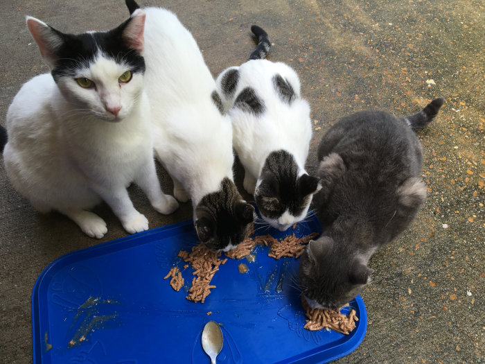

From feral to domesticated and all fosters in between
What follows are brief accounts of how some of our kitties found us and how we came to take in the others in chronological order. It includes brief anecdotes about their behaviors and details some of the work we had to put in to socialize these fantastic feral felines.
Our Domestiated Cats
Our Originals: Introducing Memphis, Percy, and Emmy
As you may have read on the homepage these three siblings appeared first in our backyard with their feral mama cat in the fall of 2017. After working with 9 Lives to get them neutered and after they were returned to our backyard, we kept feeding them while slowly moving closer to their bowls little by little so they would get used to us. Eventually my husband would try and pet them when putting down the food bowls, and they would retreat immediately for a few feet and then try and reach the bowls again. This continued for several weeks and only by May 2018, did Memphis, the black and white boy, finally lean into the pet and started to really enjoy it. The two girls needed a bit longer and developed other patterns on how they liked to be cuddled. With Percy, the girl with only one spot on her left side, we would crouch down and hold out our arm and she would come and brush along our arm and rub against it. Emmy, our runt of the litter with a big cow spot on one side and two other spots of color on the other side, was the first to jump up into by husbands lap to eat some turkey out of his hand.
All the while, they were still living outdoors and did not dare come into our house. The first time they settled in on our kitchen chairs by the backdoor, we had to leave the backdoor open or they would freak out. Finally one evening, they were all snoozing on the kitchen chairs and this bad thunderstorm came rolling in outside. So I quietly snuck around them and closed the door very carefully and it turned out that they were okay with that.
With lots of patience, incentives, and training they became wonderful indoor/outdoor kitties. The only reminder of their previous feral state comes every time we have guests over. They all are very shy--even afraid--around other people. We are making very small progress on that front with some people but I believe they will never become cats that just come up to everyone.
Our wonderful Percy girl was the only true lap cat of the three. Once she got onto your legs, you could barely get her to leave you again. At our yearly check up in 2022, we discovered that she has developed some inflammation in her mouth and later her blood test showed that she had contracted FIV, known as Feline AIDS. In her case, the weakened immune system led to constant mouth infections even with medications. She lost weight and while we were able to keep her comfortbale for a few more months, her condition worsened to the point that we said goodbye to her with a heavy heart in October. We miss her every day.
Introducing Teddy

Did I mention that Mississippi has a cat overpopulation problem? One of those problems showed up on our fence in the fall of 2018. For several weeks, we just kept seeing and sometimes hearing this grey cat and sometimes it managed to jump down into the yard and eat some food. Because the three originals guarded the backyard, the grey kitty had to be careful about her excusions into the yard. One day, I was in our front yard and it followed me from the fence there and suddenly rubbed against my legs. I bend down and petted it and it seemed like it never wanted to stop being petted. I started walking into the backyard and it followed along, straight into our house. It turned out that this kitty, was a girl. She was already spayed, because she did have an ear tip and no microchip. So we took her in and named her Teddy--or Rhino Butt.
Teddy became our first true indoor cat. First, we would put her outside when we went to work, but she obviously did not enjoy going back out. Thus, we finally purchased a litter box and kept her indoors. Since then, she changed her behavior patterns a bit at times. For a while she would rush out the front door or backdoor at night. After much wistling, she would always come back and enjoy being in for the rest of the night. Sometimes she steps outside for 5-10 minutes, but she does feel most comfortable indoors.
Introducing Jimmy
Our second backyard invader after Teddy came to be named Jimmy because we were watching Better Call Saul at the time. Jimmy, a small black cat, was about a year old when he fought and tricked his way into our backyard. We once again borrowed a trap from 9 Lives and managed to capture and neuter him. We recovered him at our house after his surgery. He was an unusually active kitty after surgery and truly devilish. He got out of the big dog crate and tore through my pantry and eventually ended up on top the kitchen cabinets.
We decided then to just keep open the backdoor and to allow him to escape. At this point, he was a true feral cat who hated being confined and who had a temper. We did not know if he would return to our backyard after the surgery but he did and also became one of the snuggliest kitties. He even let other people cuddle him! We trained him to be comfortable indoors in case of a storm but he is our only true outdoor cat because he marks and pees in the house. Partly that is just his nature and partly this may be cause by his bladder condition. He eventually became diagnosed with Struvites (cristals in the bladder) and is on a special diet now.
Jimmy loves hanging out with me on the yoga mat. If I am in child's pose, he will come up and keep rubbing his head against mine. If I go blackberry picking in the front yard, he is by my side cuddling my legs. Often when I come home from work in the evening, he will sit by the front porch and wait for me. Recently, he followed me over to our neighbor's house and kept watch for me on their doormat till I came back out. Jimmy has the loudest meows and is very talkative especially if he is put into the carrier to go to the vet. I affectionally call his meows in the carrier the "pain of the world" meow and if you click here you will hear a lovely rendition of it.
Introducing Sylvo
This lovely green-eyed black cat with a bald patch on his shoulder and a little white bib on his chest lived on the University of Mississippi campus. He frequented a feeding station that 9 Lives monitors near the Math department. Shy to begin with he too fell for my husband's charms and eventually let him pet him. Thereafter, he would meow at my husband constantly while walking him to his car. So on December 25th, my husband was on campus for a few hours and texts me: "I am bringing home the black boy". Though Sylvo was mostly used to my husband, once in our home he immediately opened up to me as well. These days, almost 3 years later, he is a true mama's boy who sleeps on or next to my chest which is the only spot that he purrs loudly in.
He will also plop down on any textbooks or papers I use for studying to receive pets and as you can see in the video below, he will keep me company when I am reading. While he rests most of the time then, he also has these little burst of energy and he will play with anything that moves, including my books and pages.
Introducing Foxy and Ripple
These two girls also appeared at the feeding station next to the Math Department. When we first spotted them, they had already been spayed and once again, Jeremy invested time, patience, persistence, and wet cat food to get closer to these two feral kittens. He would get worried when they would hide in a large drain pipe. Eventually, they would crawl in his lap and sit there for warmth and pets. Foxy, the fluffy one of the two girls, showed up on day with a bite on her butt, so we got her to the doctor and fostered her till her wound had closed. During her time at our place, we saw a third kitten on campus that seemed related to them. We returned Foxy to campus after her recovery. While Jeremy was still working on befriending the new kitten, she developed some illness and despite our best efforts trying to trap and get her medical attention, she passed away. Not long after that Mississippi experienced a March snowstorm. The predictions were that the snow would last for several days, and so my husband scooped up Ripple and Foxy and brought them home. While we tried to find a home for them, it became clear that we did not want to separate them and that it was impossible to find a home for both these shy cats. So, they too remained with us.
Our Fosters
Introducing Hector
Hector has had many names as he too was one of the campus cats that everyone knew and named. He was one of the most approachable cats, at least at his feeding station and after he had seen you a few times filing his bowl. He enjoyed his cuddles at the feeding station and so when he turned up with an injured paw, I placed him in our carrier and he got treatment at the vets with the recommendation to keep him indoors for a week to give his paw a better chance to heal. We took him in and though we confined him at first, he mingled with our cats and managed to fit right in. He was such a good indoor cat that we broached the subject of adopting him out with our other 9 Lives members. One was a student who had also been helping to feed him and she decided to adopt him, which is why we felt good about giving him up.
Introducing little Calico
Little calico kitten had been spayed and lived at Hector's feeding station. She too wasn't a true feral cat as she immediately cuddled with us feeders. She was so affectionate with us and winter was coming on and Hector wasn't nice to her that I asked the shelter if they would take her in and adopt her out. We brought her home for a day and a night before surrendering her to the shelter and she would sleep in our arms and meow when we put her down, so attached was she to human contact. It came as no surprise to me that she got adopted after only 3 days at the shelter.
Introducing Sweetness and Lin
Sweetness and Lin were siblings to our three originals from a later litter. Unfortunately, we had been unable to trap the mother cat Kiki when we trapped our three kittens because she had just abandoned them a few days before we received the trap. Our neighbor down the road had already worked with 9 Lives before but this time around I offered that I would recover the two brothers at our house after their surgeries. They stayed with us for about a week as Sweetness showed some swelling and we wanted to make sure everything was healing properly.
Introducing Aines and her kittens Molly and Marilyn
We fostered Aines and her kittens Molly and Marilyn for a friend before and after their surgeries. The kittens lived in our upstairs bathroom while Aines had the dog kennel and later all of the kitchen/dinning room area for herself. She also knew how to behave around our other cats, so we did not have to keep her separated. My friend then returned them to their home out on the county.
Introducing Miss Kitty
Miss Kitty showed up matted and super thin on another friend's property. She took wonderful care of her and fattened her up quite a bit before asking me for help with the spay surgery. Other cats, most likely tom-cats, had been showing up at the house as well, so it was time to get Miss Kitty fixed. My friend also had travel plans, and so we took in Miss Kitty for a few weeks during which she was spayed as well. She now lives a happy life on my friend's property, and my friend can sleep easy even if Miss Kitty has tom-cat visitors.
Introducing Feisty
My colleague told me about his cat Feisty who kept having litters of kittens that then kept getting snatched by some wild animal as they lived out in the county. I offered to help him get her spayed and 9 Lives assisted with that as a custodians salary doesn't go very far. I recovered her at my house and returned her to him.
Introducing Trip
Trip, also known as Dougal, was the last hold out at the feeding station on campus. He too was befriended slowly by my husband and one of his colleagues. While we talked often about taking him in, it took another injury--this time a nasty head wound--for us to bring him home to our house for recovery. We kept him for a few weeks after which his colleague adopted him. This development was fortuitous because his feeding station was very close to a new construction zone and we all felt more at ease knowing that he had a new home.